<!DOCTYPE html>


<html lang="zh-CN">


<head>
  <meta name="baidu-site-verification" content="codeva-NSg7ynviLa" />
  <meta charset="utf-8" />
    
  <meta name="viewport" content="width=device-width, initial-scale=1, maximum-scale=1" />
  <title>
    Support Vector Machines |  
  </title>
  <meta name="generator" content="hexo-theme-ayer">
  
  <link rel="shortcut icon" href="/images/mojie.jpg" />
  
  
<link rel="stylesheet" href="/dist/main.css">

  <link rel="stylesheet" href="https://cdn.jsdelivr.net/gh/Shen-Yu/cdn/css/remixicon.min.css">
  
<link rel="stylesheet" href="/css/custom.css">

  
  <script src="https://cdn.jsdelivr.net/npm/pace-js@1.0.2/pace.min.js"></script>
  
  

  

<link rel="alternate" href="/atom.xml" title="null" type="application/atom+xml">
</head>

</html>

<body>
  <div id="app">
    
      
    <main class="content on">
      <section class="outer">
  <article
  id="post-Support-Vector-Machines"
  class="article article-type-post"
  itemscope
  itemprop="blogPost"
  data-scroll-reveal
>
  <div class="article-inner">
    
    <header class="article-header">
       
<h1 class="article-title sea-center" style="border-left:0" itemprop="name">
  Support Vector Machines
</h1>
 

    </header>
     
    <div class="article-meta">
      <a href="/posts/4de29630/" class="article-date">
  <time datetime="2021-06-23T07:22:56.000Z" itemprop="datePublished">2021-06-23</time>
</a> 
  <div class="article-category">
    <a class="article-category-link" href="/categories/%E7%90%86%E8%AE%BA%E5%AD%A6%E4%B9%A0/">理论学习</a> / <a class="article-category-link" href="/categories/%E7%90%86%E8%AE%BA%E5%AD%A6%E4%B9%A0/%E7%BA%BF%E6%80%A7%E6%A8%A1%E5%9E%8B/">线性模型</a>
  </div>
  
<div class="word_count">
    <span class="post-time">
        <span class="post-meta-item-icon">
            <i class="ri-quill-pen-line"></i>
            <span class="post-meta-item-text"> 字数统计:</span>
            <span class="post-count">4.2k</span>
        </span>
    </span>

    <span class="post-time">
        &nbsp; | &nbsp;
        <span class="post-meta-item-icon">
            <i class="ri-book-open-line"></i>
            <span class="post-meta-item-text"> 阅读时长≈</span>
            <span class="post-count">15 分钟</span>
        </span>
    </span>
</div>
 
    </div>
      
    <div class="tocbot"></div>


  
    <div class="article-entry" itemprop="articleBody">
       
  <link rel="stylesheet" type="text/css" href="https://cdn.jsdelivr.net/hint.css/2.4.1/hint.min.css"><p>ISL 真是好书！</p>
<span id="more"></span> 
<h1>资料</h1>
<p><a target="_blank" rel="noopener" href="https://www.statlearning.com/">An Introduction to Statistical Learning</a>，下文简称 <strong>ISL</strong></p>
<h1>Maximal Margin Classifier</h1>
<h2 id="What-Is-a-Hyperplane">What Is a Hyperplane?</h2>
<p>超平面 (<em>hyperplane</em>) 是指在 p 维空间中维度为 p-1 的子空间。例如，对于二维空间，超平面就是一条线；在三维空间，超平面就是一个二维的平面。</p>
<p>超平面的数学定义很简单，但与一个二维空间的超平面，定义如下：</p>
<p style=""></p><p>我们可以看到这就是一条直线的表达式。</p>
<p>因此，我们可以推断出 p 维空间的超平面的一般表达式如下：如果一个点满足下列式子，则在超平面上。</p>
<p style=""></p><p>如果一个点 X 不在超平面上，即上面的这个式子不为0（大于0 或 小于0），我们称这个点在超平面的一侧。因此，<strong>超平面将这个空间分为了两半</strong>，下图为二维空间超平面划分出的两个空间示意图。</p>
<p>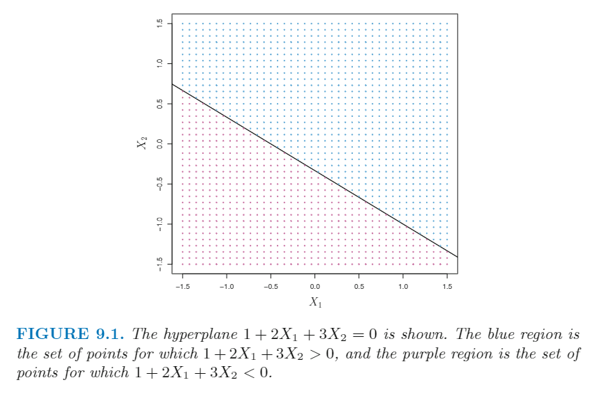</p>
<h2 id="Classification-Using-a-Separating-Hyperplane">Classification Using a Separating Hyperplane</h2>
<p>假设我们有一个 n×p 的数据集 X，包好 n 条观测值 和 p 个特征。这些观测值只有两个水平，-1 和 1。我们同时还有一个验证集。我们的目的是通过训练集构建一个 classfier，可以正确地对验证集进行分类。这里我们有很多方法可以用，经典地方法有线性判别分析和逻辑回归，决策树方法有分类树、bagging、boosting 。现在我们剔除一个基于 <em>separating hyperplane</em> 概念的新方法。</p>
<p>假设我们可以构建一个超平面，可以完美地区分训练集中不同的观测值，例如下图的左图就显示了3种  <em>separating hyperplane</em>  的例子。</p>
<p>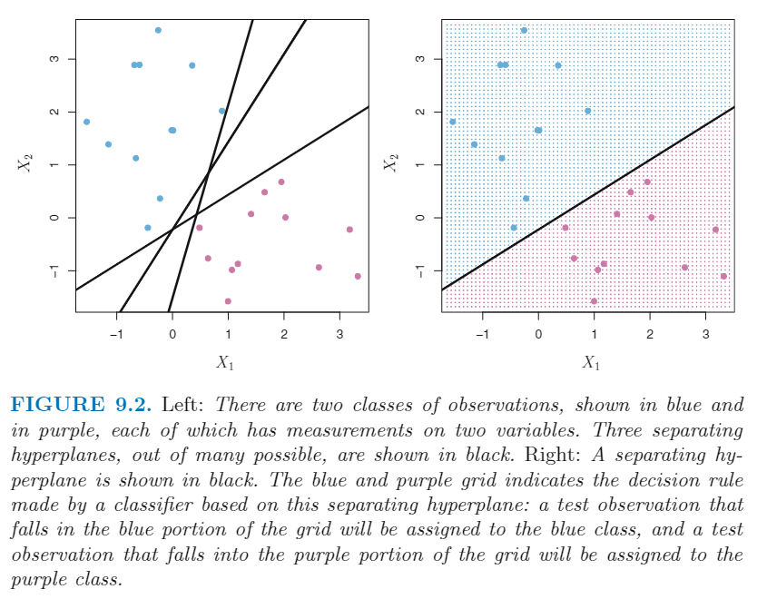</p>
<p>左图划分的公式如下：</p>
<p style=""></p><p style=""></p><p>因此，这里的一个 <em>separating hyperplane</em> 均具有下面的属性：</p>
<p style=""></p><p>如果我们能构建一个 <em>separating hyperplane</em>，我们就可以用它作为一个 <em>classifier</em> ，直接用在验证集中，效果如上图9.2 右图，预测值取决于上面的式子的符号，大于0则预测为1，小于0则预测为-1。我们同时可以利用上面式子的大小，越大说明预测值越可信。</p>
<p>通过这个例子，我们可以看到，通过 <em>separating hyperplane</em> 这种思想，我们最终构建的是一个<strong>线性决策线</strong>。</p>
<h2 id="The-Maximal-Margin-Classifier">The Maximal Margin Classifier</h2>
<p>一般来说，如果我们可以通过一个超平面来<strong>完美</strong>地划分我们的数据，那么实际上存在无数条这样的可能的超平面。如果需要通过 <em>separating hyperplane</em> 方法来构建一个 classfier ，那么我们需要决定使用哪一个 <em>separating hyperplane</em> 。</p>
<p>一个自然的方法是 <em>the maximal margin classifier</em> ，也称为 <em>optimal separating hyperplane</em> ，即选择与训练集所有的观测点距离最远的 <em>separating hyperplane</em> 。我们可以计算所有观测点到一个给定的 <em>separating hyperplane</em> 的直线距离，所有点的直线距离的最小值称为 <em>margin</em> 。<em>the maximal margin classifier</em> 是 <em>margin</em> 最大的超平面（即所有点的最小直线距离 <em>margin</em> 最大）。虽然这种方法一般很成功，但是当p很大，可能会造成 <em><strong>overfitting</strong></em>。</p>
<p>下图展示了用上图9.2训练集数据计算的最大边际分类器的结果。<em>margin</em> 体现为虚线和实线的直线距离，我们可以看到有3个点与分类器的距离最小，这三个点一般也被称为 <em>support vectors</em> ，因为它们是 p 维空间的向量，而且它们 “support” 我们的最大边际分类器的结果，如果我们把这些点稍微移动了一些位置，那么我们最终的分类器结果也会跟着改变。<strong>其实，最大边际分类器的构建仅取决于这几个点，和其他点毫不相关。</strong></p>
<p>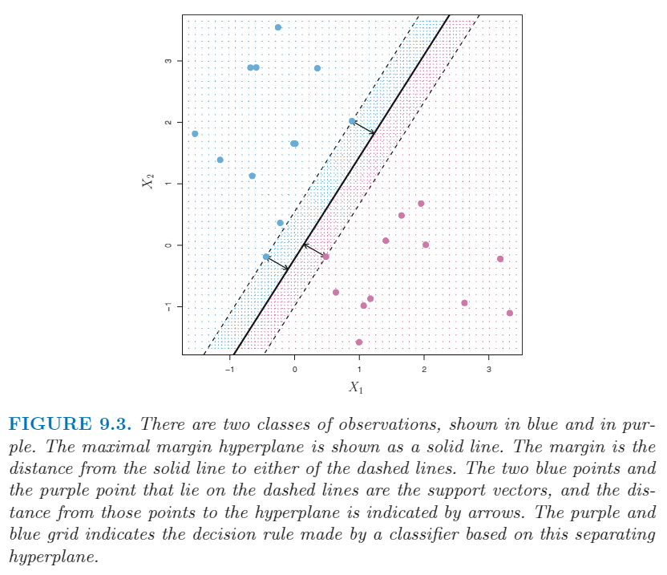</p>
<h2 id="Construction-of-the-Maximal-Margin-Classifier">Construction of the Maximal Margin Classifier</h2>
<p>简单地说，对于n × p 的训练集，反应变量只有两个水平 -1 和 1，最大边际超平面就是下面问题的解。</p>
<p style=""></p><p>首先假定 M 大于0，那个式子就保证了训练集中所有的观测值均会正确地分类。基于上式第二行的条件，可以推断出，点到超平面的直线距离就是下式。（未证明）</p>
<p style=""></p><p>因此，这个式子确保了所有观测值均被正确分类了，并且与超平面的距离至少为 M，即 M 就是 <em>margin</em> 。然后，我们需要挑出一组 β ，使得 M 的值最大。</p>
<h2 id="The-Non-separable-Case">The Non-separable Case</h2>
<p>上面的方法有一个缺点，有些时候根本不存在  <em>separating hyperplane</em> ，所以也就不存在最大边际超平面。带入上式即为，找不到 M &gt; 0 的解，下图为一个例子。</p>
<p>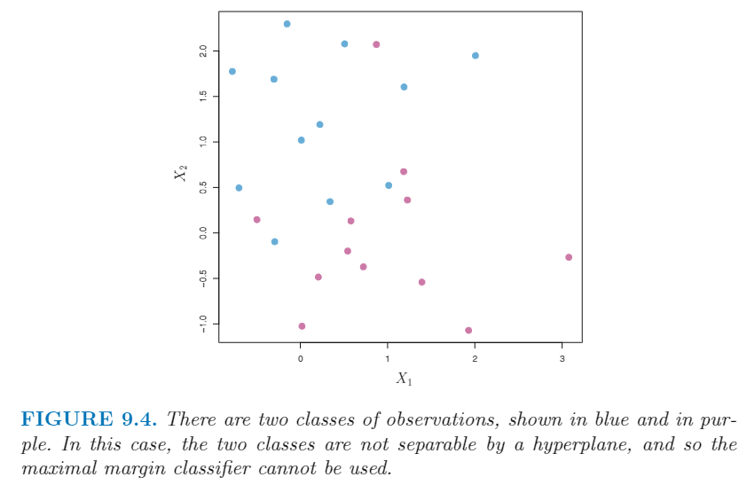</p>
<p>我们可以把这个思路扩展一下，改成找到一个能正确分类大多数观测点的超平面，这个方法称为 <em>support vector classifier</em> 。</p>
<h1>Support Vector Classifier</h1>
<p>如上图所示，有些时候我们无法找到一个能把所有观测值正确分开的超平面。事实上，即便真的存在 <em>separating hyperplane</em> ，有时这个超平面构建成的分类器可能也不理想。由于要将所有观测值均要正确分开，因此 <em>separating hyperplane</em> 会对于个体观测值非常敏感。下图为一个例子，右图中仅仅是新增了一个观测值就导致最大边际超平面发生了很大的改变，新的超平面其实并不理想，比如说这个超平面的 <em>margin</em> 非常小。</p>
<p>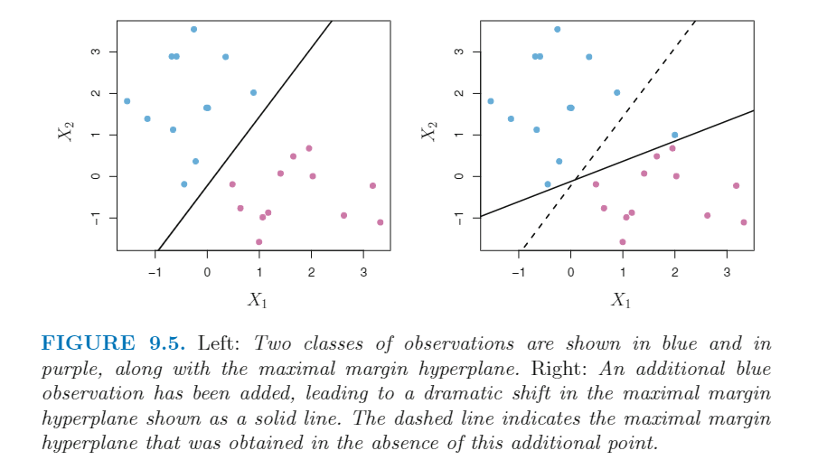</p>
<p>由于最大边际超平面对于单个观测值的变化非常敏感，因此非常容易造成过拟合的现象。</p>
<p>因此这种情况下，我们可能更希望想要一个<strong>不是完美分类</strong>的分类器，优点在于更加稳健，不容易受到个别极端值的影响。也就是说，训练集中一小撮的观测值被错误分类是允许的，这是为了让剩下的大部分观测值的预测更加稳定。</p>
<p>上述思想一般就称为 <em>support vector classifier</em> ，有时也称为 <em>soft margin classifier</em> ，效果见下图。左图我们可以看到大部分点在划分的margin 线以外，有几个点在划分的 margin 线以内；右图甚至有几个点直接判别错误（在超平面的另一边），如 11 和 12 。</p>
<p>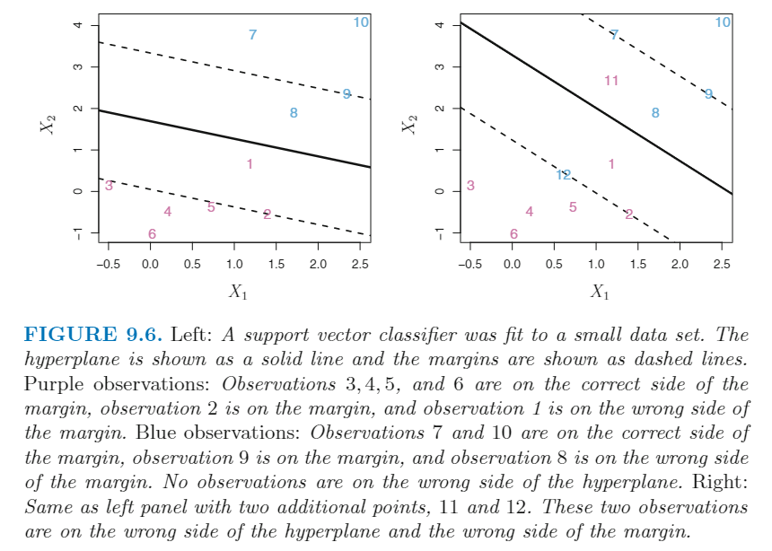</p>
<h2 id="Details-of-the-Support-Vector-Classifier">Details of the Support Vector Classifier</h2>
<p><em>support vector classifier</em> 方法的数学式子如下：</p>
<p style=""></p><p>这里的 C 是一个调整参数。同上，M 表示 margin ，需要寻找最大值。ε<sub>i</sub> 为松弛变量，使得有些个体可以在错误的margin 甚至是错误的 hyperplane 上；如果 ε<sub>i</sub> 等于0，那么这个观测值就在正确的 margin 一侧；如果 ε<sub>i</sub>  &gt; 0 ，那么这个观测值就在 错误的 margin 一侧；如果 ε<sub>i</sub> &gt; 1 ，那么这个观测值就在错误的 超平面一侧。</p>
<p>这里的 C 限制了 ε<sub>i</sub> 之和，因此这个参数表示我们能允许多少观测值被错误分类。如果 C = 0, 那么这就是最大边际超平面。C 的范围在 0 ~ n 之间，下图为不同 C 值的结果，左上图C值最大，之后不断减少。</p>
<p>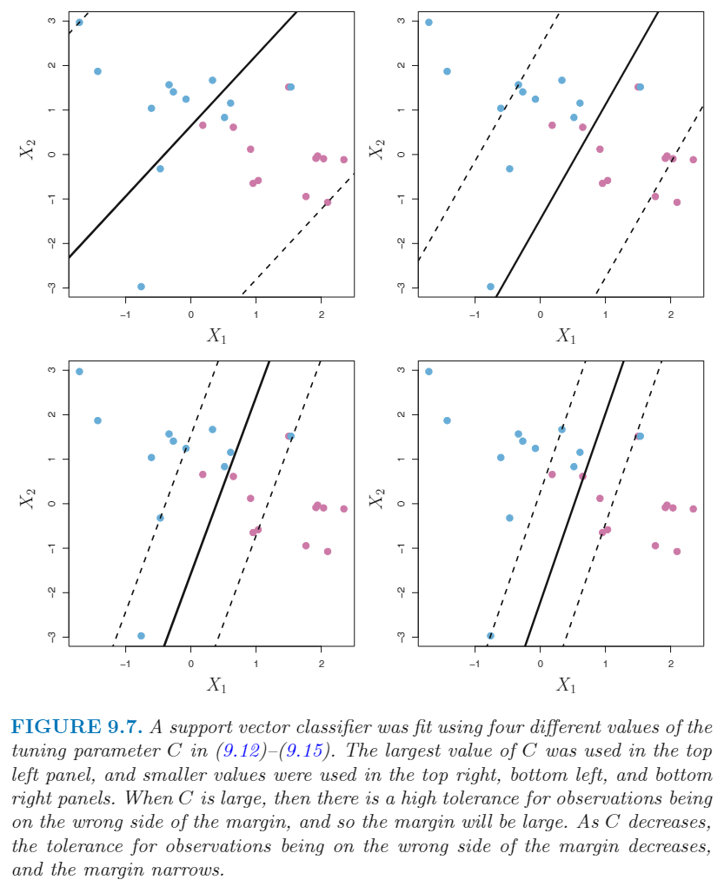</p>
<p>在实际情况中，我们一般用交叉验证来决定 C 值的大小。</p>
<p><em>support vector classifier</em> 有一个特性：<strong>只有在 margin 线上或在错误的margin线一侧的点才会影响 <em>support vector classifier</em> 结果</strong>；对于那些处于正确的 margin 线一侧的点，移动这些点的位置不会影响分类器。</p>
<p>因此在 margin 线上或在错误的margin线一侧的点称为 <em><strong>support vectors</strong></em> 。这和我们说 C 值控制 bias-variance trade-off 也是一致的，当 C 值很大时，存在很多观测值在错误的 margin 线一侧，即<em>support vectors</em> 很多，即构建分类器用到的点很多，所以 variance 较低（由于用到了很多的 <em>support vectors</em> ），但是可能 bias 很高，如上图左上图。当 C 值很小时，构建分类器用到的点较少，因此 variance 较高，但是 bias 较低，如右图右下图，这里其实只有 8 个 <em>support vectors</em> 。</p>
<p>这种分类器几乎不受到离超平面很远的点的影响，这个性质和其他分类方法不太一样，比如前面提到的线性判别方法 (LDA 方法需要计算每个水平所有观测值的均值，以及使用所有观测值计算水平内的方差矩阵) 。与之相反，逻辑回归对于远离决策线的观测值的敏感性很低。</p>
<h1>Support Vector Machines</h1>
<p>我们之前提到过如何将一个线性的分类器转为非线性的分类器。这里 <em>support vector machines</em> 实现了同样的效果。</p>
<h2 id="Classification-with-Non-linear-Decision-Boundaries">Classification with Non-linear Decision Boundaries</h2>
<p>有时我们会面临非线性的决策线，如下图。此时，<em>support vector classifier</em>  结果基本毫无用处。</p>
<p>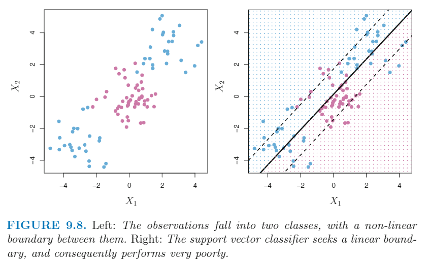</p>
<p>类似于线性模型的作法，这里我们也可以加入<strong>多项式</strong>来解决这个问题，比如对 p 个特征都添加二次型。</p>
<p style=""></p><p>此时的分类器算法变为：</p>
<p style=""></p><p>这里我们可以加入更高的项，或者加入互作效应（X<sub>i</sub>X<sub>j</sub>）等。我们可能会添加了太多的变量，导致计算量失控。<em>support vector machines</em> 方法可以有效管控这一点。</p>
<h2 id="The-Support-Vector-Machine">The Support Vector Machine</h2>
<p>SVM 方法是上面 <em>support vector classifier</em> 方法的拓展，使用 <em>kernels</em> 方法来拓展变量空间。思路见上，但是 <em>kernels</em> 方法是一个有效的实现这个思路的计算方法。ISL 这里没有详细介绍 SVM 的算法。</p>
<p>下面这些论断全没有证明。</p>
<p><em>support vector classifier</em> 求解需要用到内积 (结果为一个标量)， 标量公式如下：</p>
<p style=""></p><p>因此两个观测值x<sub>i</sub> ，x<sub>i’</sub> 的内积为</p>
<p style=""></p><p><em>support vector classifier</em> 可以表示为下式。这里有n 个参数 α<sub>i</sub>  ，每个观测值一个参数。为了估计 f(x) ，我们需要计算新点 x 和训练集中所有的点 x<sub>i</sub> 的内积。</p>
<p style=""></p><p>为了估计参数 α<sub>1</sub>, …… ，α<sub>n</sub> 和 β<sub>0</sub> ，我们需要计算训练集中所有观测值之间可能的配对的内积（需要计算 C<sup>2</sup><sub>n</sub> 次）</p>
<p>实际上，大多数点的 α<sub>i</sub> 都是0，只有 <em>support vector</em> 的 α<sub>i</sub> 不为0 。因此，假定 <em>S</em> 是所有这些 <em>support points</em> 的索引的集合，我们可以将上面的解函数写成</p>
<p style=""></p><p>总结一下，<em>support vector classifier</em>  方法中估计参数和求解，都是用了求<strong>内积</strong>的方法。这里我们可以把所有求内积的地方改为一个一般化的形式：</p>
<p style=""></p><p>这里的 K 指某种函数，一般称为 <em>kernel</em> 。<strong><em>kernel</em> 函数是一个度量两个观测值之间的相似性的指标</strong>。例如，我们可以使用下式，这就是内积的公式，一般也称为 <em>linear kernel</em> ，因为 <em>support vector classifier</em> 方法是线性的。 <em>linear kernel</em>  实际是采用皮尔逊相关的方法来衡量观测值之间的相似性。</p>
<p style=""></p><p>我们可以换别的 <em>kernel</em> ，例如下式，这一般称为 <em>polynomial kernel of degree d</em> ，这里 d 是一个正整数。这时候构建的决策线就不再是线性的。</p>
<p style=""></p><p>当采用非线性的 <em>kernel</em> 时，这时便称为 <em>support vector machine</em> 。预测函数如下：</p>
<p style=""></p><p>下图中的左图显示了SVM采用多项式 kernel 的效果。</p>
<p>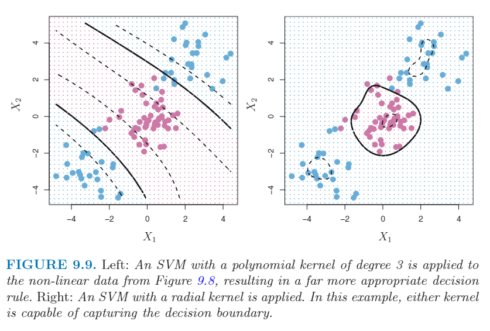</p>
<p>多项式 <em>kernel</em> 仅仅是其中的一个例子，另一个可选的 <em>kernel</em> 为 <em>radial kernel</em> ，形式如下。其中的 γ 为一个正数。上图中的右图就是使用了 <em>radial kernel</em> 的效果。</p>
<p style=""></p><p><em>radial kernel</em> 如何工作的呢？假设我们有一个验证集观测值 x<sup>*</sup> ，这个点与一个训练集的点 x<sub>i</sub>  距离很远，那么经过一个简单的数学推理，我们知道这两个点配对的 <em>radial kernel</em>  非常小，接近于0，因此这个训练集的点对这个验证集的预测几乎没有作用。</p>
<p>使用不同的 kernel 函数，相较于使用旧的特征往特征空间中添加新的特征（比如加入二次项），优势在哪里呢？一个主要的优势就是计算量的优势。</p>
<h2 id="An-Application-to-the-Heart-Disease-Data">An Application to the Heart Disease Data</h2>
<h2 id="ROC-curve">ROC curve</h2>
<p>对于一个二分类的反应变量，预测结果和真实结果比对统计如下：</p>
<p>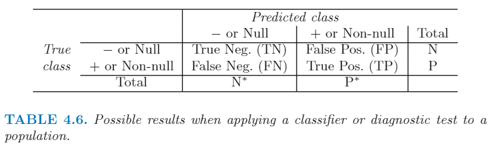</p>
<p><abbr title="receiver operating characteristics">ROC</abbr>  曲线是用来展现不同的阈值下两种错误的错误概率的变化。下图就是 ROC 图 ，纵坐标是 <em>sensitivity</em> /power/ 1- Type Ⅱ error，就是零假设被正确拒绝的概率（真实值为1的个体中预测值也为1的概率，结合上表为 <strong>TP/P</strong>）；横坐标为 Type Ⅰ error / <em>1-specificity</em> ，为零假设被错误拒绝的概率，即假阳性概率（真实值为0的个体中预测值为1的概率，计算公式为 <strong>FP/N</strong>）。</p>
<p><strong>ROC 可以比较预测二分类变量的不同方法的预测效果</strong>。ROC 曲线越接近左上侧越好，或者说 ROC 曲线下方的面积越大越好。</p>
<p>这里我们采用13个特征预测个体是否有心脏疾病，总共297个样本，随机挑选207个样本作为训练集，90个样本作为验证集。下图中的左图为采用 LDA 和 support vector classifier 方法的效果，二者差不多，support vector classifier 方法略有优势；右图为与采用 <em>radial kernel</em> 的 SVM 方法的比较，这里随着 γ 的增加，决策线越曲折，ROC 曲线越好。但是看清楚，这里的图是<strong>训练集的效果</strong>，会有误导作用，我们要看验证集的效果。</p>
<p>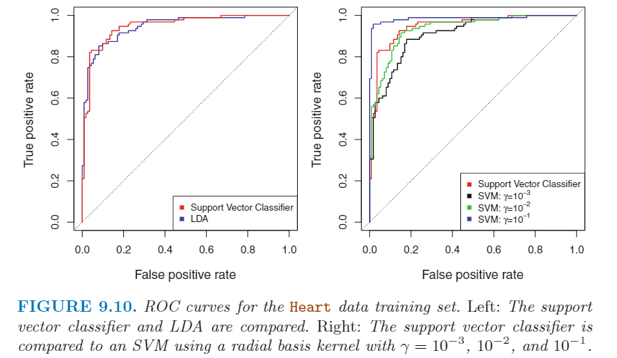</p>
<p>下图为验证集的效果，我们左图差不多，右图 γ = 0.1 在训练集上效果最好，但是在验证集上效果最差，再一次证明模型并不是越灵活越好。</p>
<p>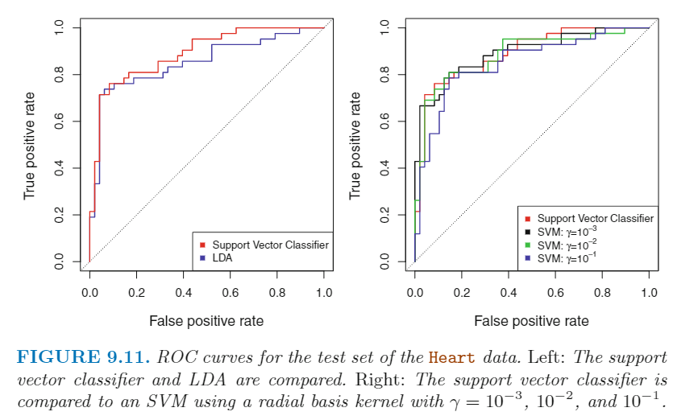</p>
<h1>SVMs with More than Two Classes</h1>
<p>上面的讨论都只是针对二分类的反应变量，那么我们能不能将 SVMs 方法应用到有更多的水平的反应变量上呢？事实上 SVMs 方法基于的 <em>separating hyperplanes</em> 理念本身并不能自动地推导到多个水平的分析。目前也有很多方法将 SVMs 方法拓展到多水平反应变量的分析，最著名的两个就是 <em>one-versus-one</em> 和 <em>one-versus-all</em> 方法。</p>
<h2 id="One-Versus-One-Classification">One-Versus-One Classification</h2>
<p>假设反应变量是 K 个水平，那么我们构建 C<sub>K</sub><sup>2</sup>  次 SVMs ，每一次包含一对水平。预测的时候，我们会计算这 C<sub>K</sub><sup>2</sup> 次的预测值，然后将所有预测结果中出现频率最频繁的水平作为最终的预测值。</p>
<h2 id="One-Versus-All-Classification">One-Versus-All Classification</h2>
<p>这个方法我们拟合 K 次 SVMs，每一次比对其中一个水平（设为1）和剩下的 K-1 个水平（设为-1）。预测时，我们分配所有 SVMs 中下式最大的 SVM 的水平，因为这个式子越大，说明这个观测值属于这个水平的可行程度越高。</p>
<p style=""></p><h1>Relationship to Logistic Regression</h1>
<p><em>support vector classifier</em> 的拟合条件可以重新写为</p>
<p style=""></p><p>其中 λ 是一个非负数，后面的式子就类似于岭回归的惩罚项。总的式子就是 “Loss + Penalty&quot; 的形式。这里的 Loss 项拓展开来如下：</p>
<p style=""></p><p>这也称为 <em>hinge loss</em> 。如下图所示，SVM 的 Loss 项和逻辑回归相关程度很高。SVM 的 Loss 项还有一个特点，对于处于正确的margin 一侧的点对模型结果没有影响，这体现在下式如果大于1，那么 Loss 项就正好是 0 。但是，逻辑回归不会正好是 0 ，会是一个很小的值，同样见下图。</p>
<p style=""></p><p>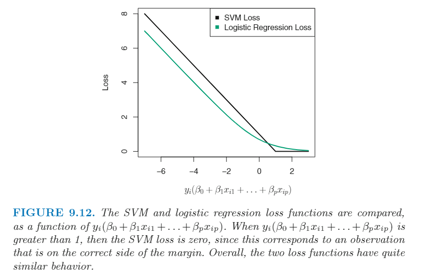</p>
<p>因此 <em>support vector classifier</em> 和 逻辑回归的结果很相似，当两个水平之间分得较开，<em>support vector classifier</em> 结果更好一点；如果两个水平之间重叠区域较多，那么逻辑回归效果更好。</p>
<p>因此在描述线性关系的过程中，SVM 和逻辑回归等经典方法是高度相关的。那么是否在描述非线性关系时 SVM 采用特殊的 <em>kernels</em> 的做法就是独一无二的呢？答案也是否定的，我们同样可以对逻辑回归或者其他经典的分类方法采用非线性的 <em>kernels</em> 。但是由于历史原因，一般 <em>non-linear kernels</em> 用于SVMs 方法比经典的逻辑回归等方法更加广泛。</p>
<p>SVM 方法的思路同样可以用于回归问题中，称为 <em><strong>support vector regression</strong></em> ，这里的 Loss 项是超过某个常数的<strong>残差绝对值</strong>之和，低于给定常数的残差绝对值则直接忽略。</p>
<h1>R代码</h1>
<p>略</p>
 
      <!-- reward -->
      
      <div id="reword-out">
        <div id="reward-btn">
          打赏
        </div>
      </div>
      
    </div>
    

    <!-- copyright -->
    
    <div class="declare">
      <ul class="post-copyright">
        <li>
          <i class="ri-copyright-line"></i>
          <strong>版权声明： </strong>
          
          本博客所有文章除特别声明外，著作权归作者所有。转载请注明出处！
          
        </li>
      </ul>
    </div>
    
    <footer class="article-footer">
       
  <ul class="article-tag-list" itemprop="keywords"><li class="article-tag-list-item"><a class="article-tag-list-link" href="/tags/%E6%95%B0%E6%8D%AE%E5%88%86%E6%9E%90/" rel="tag">数据分析</a></li><li class="article-tag-list-item"><a class="article-tag-list-link" href="/tags/%E7%90%86%E8%AE%BA%E5%AD%A6%E4%B9%A0/" rel="tag">理论学习</a></li><li class="article-tag-list-item"><a class="article-tag-list-link" href="/tags/%E7%BA%BF%E6%80%A7%E6%A8%A1%E5%9E%8B/" rel="tag">线性模型</a></li></ul>

    </footer>
  </div>

   
  <nav class="article-nav">
    
      <a href="/posts/da92ff49/" class="article-nav-link">
        <strong class="article-nav-caption">上一篇</strong>
        <div class="article-nav-title">
          
            Unsupervised Learning
          
        </div>
      </a>
    
    
      <a href="/posts/7532e592/" class="article-nav-link">
        <strong class="article-nav-caption">下一篇</strong>
        <div class="article-nav-title">Tree Based Methods</div>
      </a>
    
  </nav>

   
<!-- valine评论 -->
<div id="vcomments-box">
  <div id="vcomments"></div>
</div>
<script src="//cdn1.lncld.net/static/js/3.0.4/av-min.js"></script>
<script src="https://cdn.jsdelivr.net/npm/valine@1.4.14/dist/Valine.min.js"></script>
<script>
  new Valine({
    el: "#vcomments",
    app_id: "yHN3kf7fHt5wvleM2DVoHLdY-gzGzoHsz",
    app_key: "RPIwmdftljIzOtAULwc7JCAp",
    path: window.location.pathname,
    avatar: "monsterid",
    placeholder: "靓仔，看完留个评论再走哇！\n只需要填入昵称和邮箱就可以了",
    recordIP: true,
  });
  const infoEle = document.querySelector("#vcomments .info");
  if (infoEle && infoEle.childNodes && infoEle.childNodes.length > 0) {
    infoEle.childNodes.forEach(function (item) {
      item.parentNode.removeChild(item);
    });
  }
</script>
<style>
  #vcomments-box {
    padding: 5px 30px;
  }

  @media screen and (max-width: 800px) {
    #vcomments-box {
      padding: 5px 0px;
    }
  }

  #vcomments-box #vcomments {
    background-color: #fff;
  }

  .v .vlist .vcard .vh {
    padding-right: 20px;
  }

  .v .vlist .vcard {
    padding-left: 10px;
  }
</style>

 
   
     
</article>

</section>
      <footer class="footer">
  <div class="outer">
    <ul>
      <li>
        Copyrights &copy;
        2019-2023
        <i class="ri-heart-fill heart_icon"></i> Vincere Zhou
      </li>
    </ul>
    <ul>
      <li>
        
        
        <span>
  <span><i class="ri-user-3-fill"></i>访问人数:<span id="busuanzi_value_site_uv"></span></s>
  <span class="division">|</span>
  <span><i class="ri-eye-fill"></i>浏览次数:<span id="busuanzi_value_page_pv"></span></span>
</span>
        
      </li>
    </ul>
    <ul>
      
    </ul>
    <ul>
      
    </ul>
    <ul>
      <li>
        <!-- cnzz统计 -->
        
      </li>
    </ul>

    <!-- 与只只在一起天数 -->
	<ul>
		<li><span id="lovetime_span"></span></li>
	</ul>
    <script type="text/javascript">			
        function show_runtime() {
            window.setTimeout("show_runtime()", 1000);
            X = new Date("03/04/2021 22:11:00");
            Y = new Date();
            T = (Y.getTime() - X.getTime());
            M = 24 * 60 * 60 * 1000;
            a = T / M;
            A = Math.floor(a);
            b = (a - A) * 24;
            B = Math.floor(b);
            c = (b - B) * 60;
            C = Math.floor((b - B) * 60);
            D = Math.floor((c - C) * 60);
            lovetime_span.innerHTML = "只只和男朋友在一起了 " + A + "天" + B + "小时" + C + "分" + D + "秒"
        }
        show_runtime();
    </script>

  </div>
</footer>
      <div class="float_btns">
        <div class="totop" id="totop">
  <i class="ri-arrow-up-line"></i>
</div>

      </div>
    </main>
    <aside class="sidebar on">
      <button class="navbar-toggle"></button>
<nav class="navbar">
  
  <div class="logo">
    <a href="/"></a>
  </div>
  
  <ul class="nav nav-main">
    
    <li class="nav-item">
      <a class="nav-item-link" href="/">主页</a>
    </li>
    
    <li class="nav-item">
      <a class="nav-item-link" href="/archives">归档</a>
    </li>
    
    <li class="nav-item">
      <a class="nav-item-link" href="/categories">分类</a>
    </li>
    
    <li class="nav-item">
      <a class="nav-item-link" href="/tags">标签</a>
    </li>
    
    <li class="nav-item">
      <a class="nav-item-link" href="/friends">友链</a>
    </li>
    
    <li class="nav-item">
      <a class="nav-item-link" href="/about">关于</a>
    </li>
    
  </ul>
</nav>
<nav class="navbar navbar-bottom">
  <ul class="nav">
    <li class="nav-item">
      
      <a class="nav-item-link nav-item-search"  title="搜索">
        <i class="ri-search-line"></i>
      </a>
      
      
      <a class="nav-item-link" target="_blank" href="/atom.xml" title="RSS Feed">
        <i class="ri-rss-line"></i>
      </a>
      
    </li>
  </ul>
</nav>
<div class="search-form-wrap">
  <div class="local-search local-search-plugin">
  <input type="search" id="local-search-input" class="local-search-input" placeholder="Search...">
  <div id="local-search-result" class="local-search-result"></div>
</div>
</div>
    </aside>
    <script>
      if (window.matchMedia("(max-width: 768px)").matches) {
        document.querySelector('.content').classList.remove('on');
        document.querySelector('.sidebar').classList.remove('on');
      }
    </script>
    <div id="mask"></div>

<!-- #reward -->
<div id="reward">
  <span class="close"><i class="ri-close-line"></i></span>
  <p class="reward-p"><i class="ri-cup-line"></i>请我喝杯茶吧~</p>
  <div class="reward-box">
    
    <div class="reward-item">
      
      <span class="reward-type">支付宝</span>
    </div>
    
    
    <div class="reward-item">
      
      <span class="reward-type">微信</span>
    </div>
    
  </div>
</div>
    
<script src="/js/jquery-2.0.3.min.js"></script>


<script src="/js/lazyload.min.js"></script>

<!-- Tocbot -->


<script src="/js/tocbot.min.js"></script>

<script>
  tocbot.init({
    tocSelector: '.tocbot',
    contentSelector: '.article-entry',
    headingSelector: 'h1, h2, h3, h4, h5, h6',
    hasInnerContainers: true,
    scrollSmooth: true,
    scrollContainer: 'main',
    positionFixedSelector: '.tocbot',
    positionFixedClass: 'is-position-fixed',
    fixedSidebarOffset: 'auto'
  });
</script>

<script src="https://cdn.jsdelivr.net/npm/jquery-modal@0.9.2/jquery.modal.min.js"></script>
<link rel="stylesheet" href="https://cdn.jsdelivr.net/npm/jquery-modal@0.9.2/jquery.modal.min.css">
<script src="https://cdn.jsdelivr.net/npm/justifiedGallery@3.7.0/dist/js/jquery.justifiedGallery.min.js"></script>

<script src="/dist/main.js"></script>

<!-- ImageViewer -->

<!-- Root element of PhotoSwipe. Must have class pswp. -->
<div class="pswp" tabindex="-1" role="dialog" aria-hidden="true">

    <!-- Background of PhotoSwipe. 
         It's a separate element as animating opacity is faster than rgba(). -->
    <div class="pswp__bg"></div>

    <!-- Slides wrapper with overflow:hidden. -->
    <div class="pswp__scroll-wrap">

        <!-- Container that holds slides. 
            PhotoSwipe keeps only 3 of them in the DOM to save memory.
            Don't modify these 3 pswp__item elements, data is added later on. -->
        <div class="pswp__container">
            <div class="pswp__item"></div>
            <div class="pswp__item"></div>
            <div class="pswp__item"></div>
        </div>

        <!-- Default (PhotoSwipeUI_Default) interface on top of sliding area. Can be changed. -->
        <div class="pswp__ui pswp__ui--hidden">

            <div class="pswp__top-bar">

                <!--  Controls are self-explanatory. Order can be changed. -->

                <div class="pswp__counter"></div>

                <button class="pswp__button pswp__button--close" title="Close (Esc)"></button>

                <button class="pswp__button pswp__button--share" style="display:none" title="Share"></button>

                <button class="pswp__button pswp__button--fs" title="Toggle fullscreen"></button>

                <button class="pswp__button pswp__button--zoom" title="Zoom in/out"></button>

                <!-- Preloader demo http://codepen.io/dimsemenov/pen/yyBWoR -->
                <!-- element will get class pswp__preloader--active when preloader is running -->
                <div class="pswp__preloader">
                    <div class="pswp__preloader__icn">
                        <div class="pswp__preloader__cut">
                            <div class="pswp__preloader__donut"></div>
                        </div>
                    </div>
                </div>
            </div>

            <div class="pswp__share-modal pswp__share-modal--hidden pswp__single-tap">
                <div class="pswp__share-tooltip"></div>
            </div>

            <button class="pswp__button pswp__button--arrow--left" title="Previous (arrow left)">
            </button>

            <button class="pswp__button pswp__button--arrow--right" title="Next (arrow right)">
            </button>

            <div class="pswp__caption">
                <div class="pswp__caption__center"></div>
            </div>

        </div>

    </div>

</div>

<link rel="stylesheet" href="https://cdn.jsdelivr.net/npm/photoswipe@4.1.3/dist/photoswipe.min.css">
<link rel="stylesheet" href="https://cdn.jsdelivr.net/npm/photoswipe@4.1.3/dist/default-skin/default-skin.min.css">
<script src="https://cdn.jsdelivr.net/npm/photoswipe@4.1.3/dist/photoswipe.min.js"></script>
<script src="https://cdn.jsdelivr.net/npm/photoswipe@4.1.3/dist/photoswipe-ui-default.min.js"></script>

<script>
    function viewer_init() {
        let pswpElement = document.querySelectorAll('.pswp')[0];
        let $imgArr = document.querySelectorAll(('.article-entry img:not(.reward-img)'))

        $imgArr.forEach(($em, i) => {
            $em.onclick = () => {
                // slider展开状态
                // todo: 这样不好，后面改成状态
                if (document.querySelector('.left-col.show')) return
                let items = []
                $imgArr.forEach(($em2, i2) => {
                    let img = $em2.getAttribute('data-idx', i2)
                    let src = $em2.getAttribute('data-target') || $em2.getAttribute('src')
                    let title = $em2.getAttribute('alt')
                    // 获得原图尺寸
                    const image = new Image()
                    image.src = src
                    items.push({
                        src: src,
                        w: image.width || $em2.width,
                        h: image.height || $em2.height,
                        title: title
                    })
                })
                var gallery = new PhotoSwipe(pswpElement, PhotoSwipeUI_Default, items, {
                    index: parseInt(i)
                });
                gallery.init()
            }
        })
    }
    viewer_init()
</script>

<!-- MathJax -->

<script type="text/x-mathjax-config">
  MathJax.Hub.Config({
      tex2jax: {
          inlineMath: [ ['$','$'], ["\\(","\\)"]  ],
          processEscapes: true,
          skipTags: ['script', 'noscript', 'style', 'textarea', 'pre', 'code']
      }
  });

  MathJax.Hub.Queue(function() {
      var all = MathJax.Hub.getAllJax(), i;
      for(i=0; i < all.length; i += 1) {
          all[i].SourceElement().parentNode.className += ' has-jax';
      }
  });
</script>

<script src="https://cdn.jsdelivr.net/npm/mathjax@2.7.6/unpacked/MathJax.js?config=TeX-AMS-MML_HTMLorMML"></script>
<script>
  var ayerConfig = {
    mathjax: true
  }
</script>

<!-- Katex -->

<!-- busuanzi  -->


<script src="/js/busuanzi-2.3.pure.min.js"></script>


<!-- ClickLove -->

<!-- ClickBoom1 -->

<!-- ClickBoom2 -->

<!-- CodeCopy -->


<link rel="stylesheet" href="/css/clipboard.css">

<script src="https://cdn.jsdelivr.net/npm/clipboard@2/dist/clipboard.min.js"></script>
<script>
  function wait(callback, seconds) {
    var timelag = null;
    timelag = window.setTimeout(callback, seconds);
  }
  !function (e, t, a) {
    var initCopyCode = function(){
      var copyHtml = '';
      copyHtml += '<button class="btn-copy" data-clipboard-snippet="">';
      copyHtml += '<i class="ri-file-copy-2-line"></i><span>COPY</span>';
      copyHtml += '</button>';
      $(".highlight .code pre").before(copyHtml);
      $(".article pre code").before(copyHtml);
      var clipboard = new ClipboardJS('.btn-copy', {
        target: function(trigger) {
          return trigger.nextElementSibling;
        }
      });
      clipboard.on('success', function(e) {
        let $btn = $(e.trigger);
        $btn.addClass('copied');
        let $icon = $($btn.find('i'));
        $icon.removeClass('ri-file-copy-2-line');
        $icon.addClass('ri-checkbox-circle-line');
        let $span = $($btn.find('span'));
        $span[0].innerText = 'COPIED';
        
        wait(function () { // 等待两秒钟后恢复
          $icon.removeClass('ri-checkbox-circle-line');
          $icon.addClass('ri-file-copy-2-line');
          $span[0].innerText = 'COPY';
        }, 2000);
      });
      clipboard.on('error', function(e) {
        e.clearSelection();
        let $btn = $(e.trigger);
        $btn.addClass('copy-failed');
        let $icon = $($btn.find('i'));
        $icon.removeClass('ri-file-copy-2-line');
        $icon.addClass('ri-time-line');
        let $span = $($btn.find('span'));
        $span[0].innerText = 'COPY FAILED';
        
        wait(function () { // 等待两秒钟后恢复
          $icon.removeClass('ri-time-line');
          $icon.addClass('ri-file-copy-2-line');
          $span[0].innerText = 'COPY';
        }, 2000);
      });
    }
    initCopyCode();
  }(window, document);
</script>


<!-- CanvasBackground -->


    
  </div>
<script src="/live2dw/lib/L2Dwidget.min.js?094cbace49a39548bed64abff5988b05"></script><script>L2Dwidget.init({"pluginRootPath":"live2dw/","pluginJsPath":"lib/","pluginModelPath":"assets/","tagMode":false,"debug":false,"model":{"jsonPath":"/live2dw/assets/wanko.model.json"},"display":{"position":"right","width":150,"height":300,"hOffset":80,"vOffset":-70},"mobile":{"show":false,"scale":0.5},"log":false});</script></body>

</html>